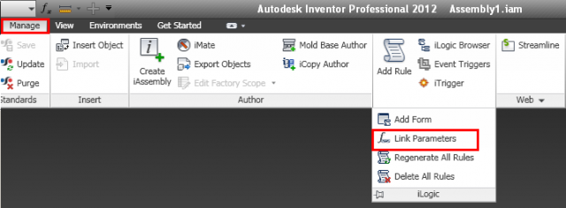
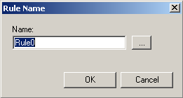
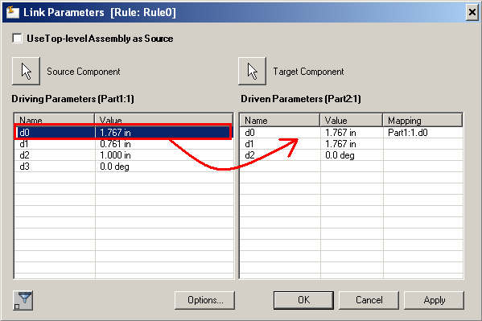
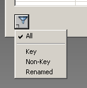
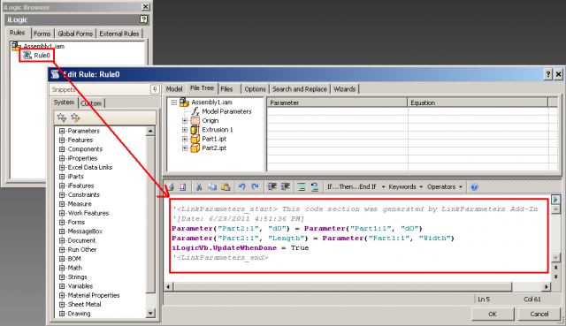

LinkParameters
LinkParameters is a tool that allows Inventor users to easily create dependencies between parameters of the various parts and sub-assemblies in the context of the top-level assembly they reside.
Getting Started
To launch the plug-in, use the following command(s)
Link Parameters
When you run the LinkParameters command a new modeless form should be displayed, allowing you to select source and target components, then creating links between parameters from the source to the target component.
Usage
When you run the LinkParameters command a new modeless form should be displayed, allowing you to select source and target components, then creating links between parameters from the source to the target component.First of all you will need to specify the name of the iLogic rule which will be created in the background. This first dialog also provides you the ability to select an existing rule if any. In that case the new iLogic code will be appended to the existing rule’s code.
Validating this dialog will display the main dialog of the tool. Using the controls on that dialog, you will be able to select source and target components. Notice that the top-level assembly can also be used as source by checking the upper-left check-box.
The mapping between source and target parameters is done by drag-n-dropping the parameters from source to target list view. By right-clicking the target mappings, they can also be suppressed through a context menu. An option to automatically map source and target parameters with the same name is also provided from this context menu.
Further controls available on that dialog are the parameters filter, that allow you to filter parameters that are displayed through the list views and the rule creation options dialog.
Screenshots

The LinkParameters command is in the slideout menu of the iLogic panel.
The LinkParameters command is in the slideout menu of the iLogic panel.

Specifying the iLogic rule name.
Specifying the iLogic rule name.

Mapping parameters between source and target using drag and drop.
Mapping parameters between source and target using drag and drop.

Filtering parameters inthe view list.
Filtering parameters inthe view list.

Specifying rule behaviour.

Example of the iLogic code generated by the LinkParameters plug-in
Example of the iLogic code generated by the LinkParameters plug-in
Installation and Uninstallation
You can unload the plugin without installing it by unchecking the"Load" checkbox associated with the plugin in the Inventor Add-In Manager.
Unchecking "Load on Startup" cause the plugin not to be loaded in future sessions of Inventor.
To remove the plugin completely, uninstall the application via your system's Control Panel.
Additional Information
The source code for this app has been provided as a Visual Studio 2008 project containing C# code (not required to run the plugin).(C) Copyright 2010 by Autodesk, Inc.
Permission to use, copy, modify, and distribute this software in
object code form for any purpose and without fee is hereby granted,
provided that the above copyright notice appears in all copies and
that both that copyright notice and the limited warranty and restricted
rights notice below appear in all supporting documentation.
AUTODESK PROVIDES THIS PROGRAM "AS IS" AND WITH ALL FAULTS.
AUTODESK SPECIFICALLY DISCLAIMS ANY IMPLIED WARRANTY OF MERCHANTABILITY OR
FITNESS FOR A PARTICULAR USE. AUTODESK, INC. DOES NOT WARRANT THAT THE
OPERATION OF THE PROGRAM WILL BE UNINTERRUPTED OR ERROR FREE.
Known Issues
Contact
This plugin was written by Jan Liska, and updated by Philippe Leefsma.Jan works for Autodesk's Consulting group.
Philippe is a Developer Consultant at Autodesk, working as part of the Autodesk Developer Network program.
Support Information
Email us at labs.plugins@autodesk.com with feedback or requests forenhancements.
Version History
1.0.0
Original release